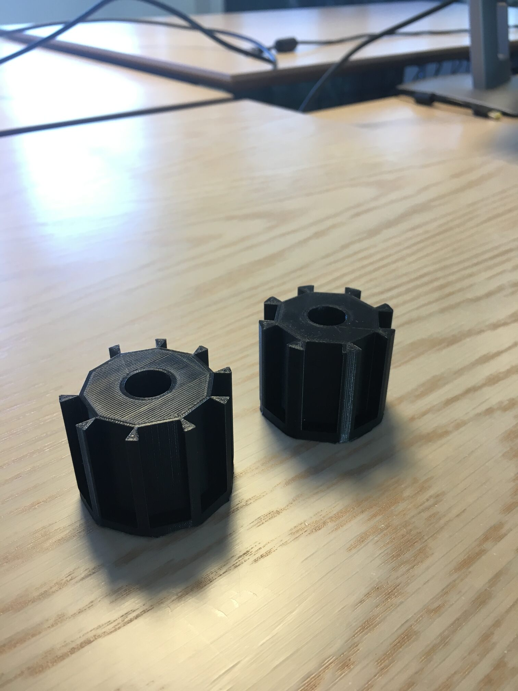
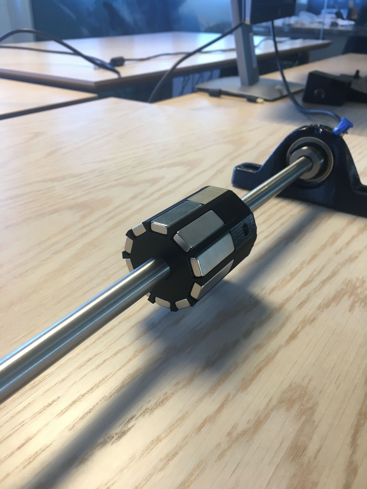
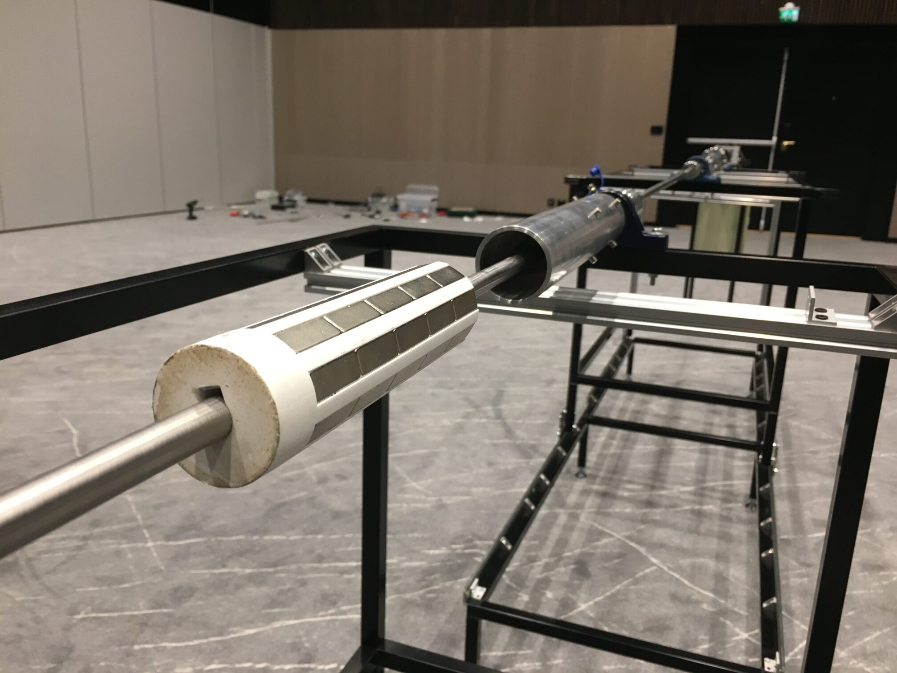
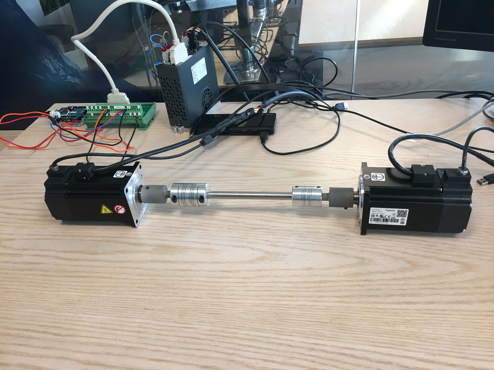
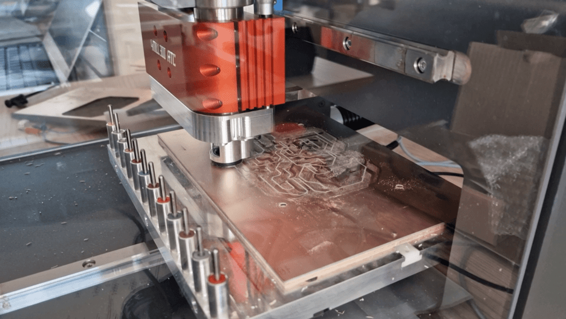
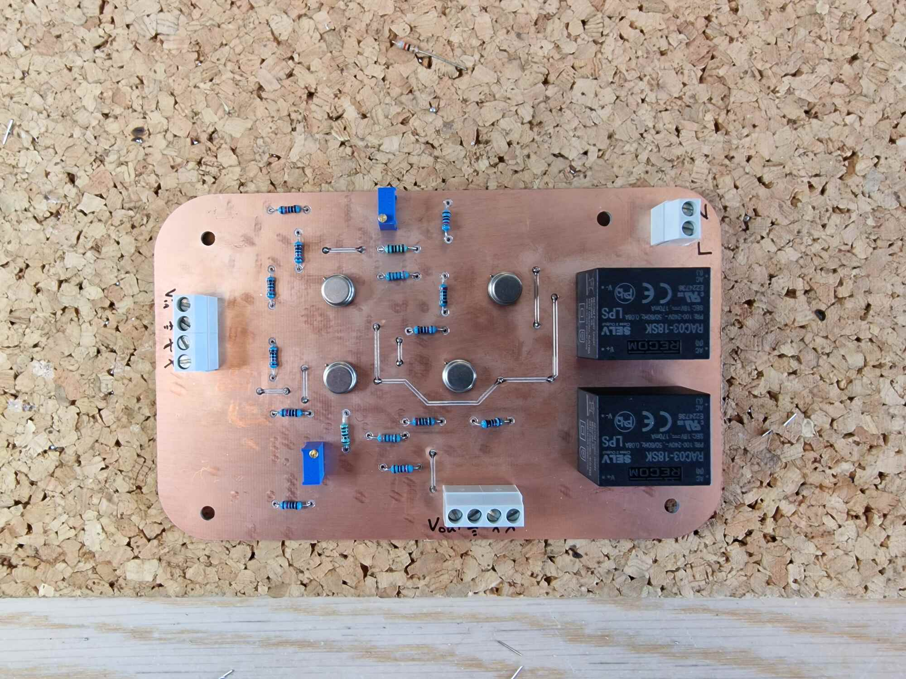
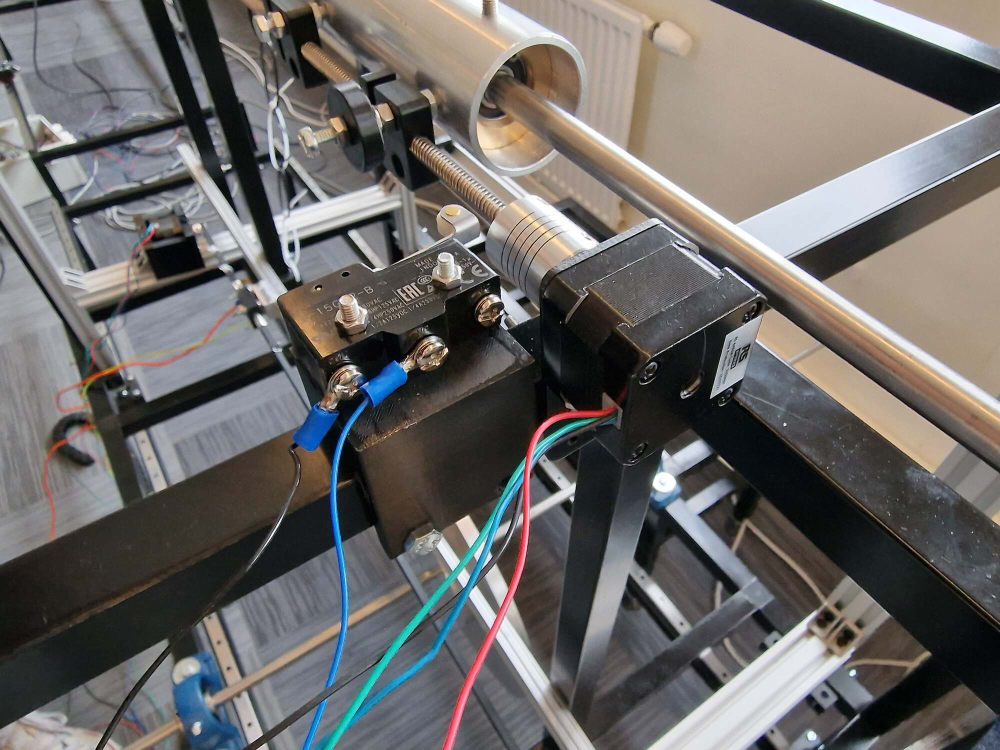
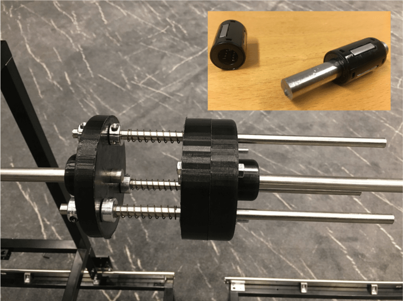
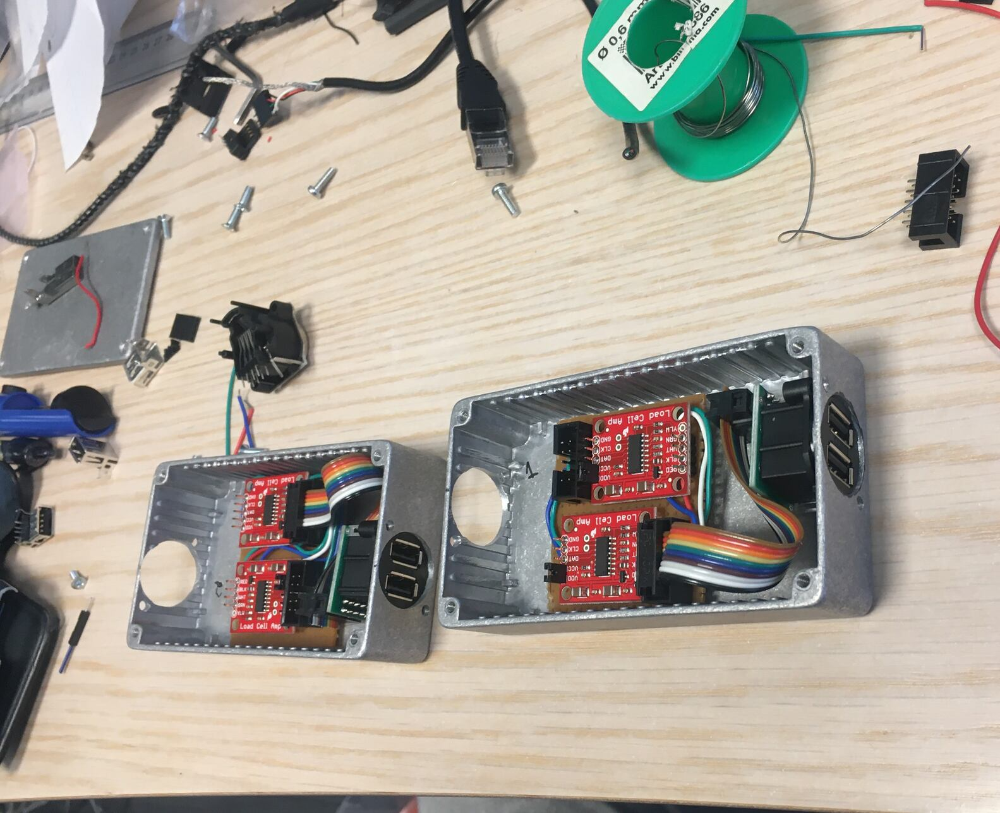

Andrew Holsaeter
R&D Engineer specializing in offshore drilling automation
Drillbotics
2017
Size: 7
Budget: $100,000
A university competition to build a completely autonomous lab-scale drilling rig.
UiS Drillbotics This was the project that sparked my love for electronics, programming, and robotics. In my last semester of my masters degree in Petroleum Engineering, I blindly signed up to be the last member of my universities Drillbotics team and was handed the role of software/hardware programmer which to my surprise, no one else wanted. What followed was a semester full of all-nighters, hair pulling, and constant confusion but I loved every second. In the end, an unfortunate last minute switch to a different stabalizer resulted in failed pipe fittings and we finished tied for 3rd.
{kind=link}
{kind=link}
{kind=link}
×
Distributed Drilling Control
2021-2022
Size: 5
Budget: $...
This project aimed to test and validate a completely new and innovative way of mitigating drillstring vibrations. But in order to test that, a physical drilling simulator needed to be built around it.
Main Development Engineer Design, construction, and full-stack programming.
{kind=link}
{kind=link}
{kind=link}
×
This photo shows some of my progession into electrical management. I discovered these
black screw terminals which I was quite happy with as they are a nice middle ground
between wire nuts/wagos and soldering together ports on both sides. From the top, you
see the friction stepper motor, 2 encoders, and the friction load cell. Due to having 2
encoders, I needed to upgrade from the normal Arduino Uno to the Mega as the 2 encoders
meant I needed atleast 4 interupt pins to accurately keep track of RPMs.
These were the first renditions of the magnet holder which I designed and printed out.
We wanted to see e.g. the optimal number of magnets in circumference, diameters,
tolerances, as well as the attachment method taking several iterations.
An early rendition with 10 magnets in circumference where you can also see the hole for
the set screw I used to keep the magnet brake in place. Eventually we settled on
slightly stronger magnets, which were a bit wider, so I reduced to 8 magnets in a “row”
with 5 of these rows in total.
Here you can see the finalized magnet brake with the tube/sleeve it can slide into to
vary the braking effect. Later I would install an actuator to this brake so that it
could be slid into and out of the non-rotating tube with software.
Felt like I was breaking a law when doing this but needed to test the two different
servo modes. One was in RPM mode acting as the drilling top-drive/rotation while the
other was in Torque mode acting as the formation rock fighting back against being
drilled.
During this project, my group acquired a MIPEC 4MILL300ATC PCB milling machine. Which is
of great use in Norway, where custom PCB’s will take weeks to ship and cost more in
shipping than the PCB’s themselves.

Which was great because I needed to create another circuit that would take the two
+/-10V analog signals from the servo drive and output the 0-5V necessary not to destroy
the Arduino. I had already made one manually as seen here.
And with the CNC’d double sided circuit.
The actuator I threw together to control the magnets sliding into and out of the tube
complete with an endstop so I could calibrate after every power down in order to know
where it was.
I particularly like this picture as it shows 3 completely different 3D printed solutions
I designed and made. The stepper motor holder, the friction applier and support, and
the axial spring system in the top right.
This was a cool idea our chief scientist initially suggested to mimic a drillstrings
axial elasticity while still transferring the rotational movement. I found this perfect
linear springs shown in the top right which are house inside the 2 combined 3D pieces on
the right side. These allow the left “drillstring” to push the right “drillstring” to
the right with some elasticity while still maintaining the rotation.
One day I will learn that you always need three times the size of an electric box as you
think. These are the load cell amplifiers which I wanted as close to the load as
possible as there was a giant EMI generator in the form of a 750 kW servo motor very
close to them.
❮
❯
1 / 4
2 / 4

3 / 4

3 / 4

3 / 4

3 / 4

3 / 4
3 / 4

3 / 4

3 / 4
3 / 4

3 / 4

Flow Rate Out Sensor: Proof of Concept
2018
Size: 2
Budget: $...
"The Macondo blowout in 2010 was caused by a series of events, and a main critical factor was the lack of accurate flow measurement as pointed out in the investigation that followed. The commonly used measurement device, the flow paddle, used on Deepwater Horizon, has an accuracy of 10%. This technology is still preferred due to the lack of alternatives."
Thus, this project aimed to test a new and innovative design to replace the flow paddle which could have helped preventing the disaster of 2010.
Flow Rate Out Sensor: (POC) I came into this project after an initial build from our chief scientist, who now has secured the patent for this design. He found the torque measurement wasn't sufficient enough as well as a problem with the collecting funnel which needed to be addressed. I installed a new high precision torque sensor along with a 12-bit ADC, cleaned up/simplified some of the electrical work and made progressive improvements to the collecting funnel. The successful results of this project led to a follow up verification project being awarded as well as a patent.
{kind=link}
{kind=link}
{kind=link}
Flow Rate Out Sensor: Verification
2023-2024
Size: 5
Budget: $1 M
Following the success of the POC project, a new project was awarded to NORCE to develop a medium scale sensor that would go up to 200 l/min and test more fluids including actual drilling mud provided by industry partners.
Flow Rate Out Sensor: (Verification) This project was of particular enjoyment as I really got to combine all my fields of knowledge that I had been devloping the past years. Docker, Python, electronics, databases, and machine learning modelling were all the things I got to use on this project.
{kind=link}
{kind=link}
DigiWells
2020-2028
Size: 30+
Budget: $9M
A long term center to develop new knowledge, methodologies, and innovative solutions to improve the well delivery process enabled by digitalization, new sensors, high speed telemetry, automation, and autonomy.
Microservices Our aim at NORCE with this center is to develop drilling automation based around microservices. I was responsible for building the entire microservice architecture from the ground up including installing the on-premis servers, creating the development environments, and complete setup of a Kubernetes production level cluster.
Publications
- Experimental Verification of Vibration Mitigation Through a Viscous Damping System Along the Drill String
- Development and Validation of a Rotating Wheel Coriolis Mass Flowmeter for Accurate Measurement of Drilling Fluid with No Pressure Loss
- Integration of Modeling and Drilling Incident Management of a Real-time Lab-scale Autonomous Drilling Rig